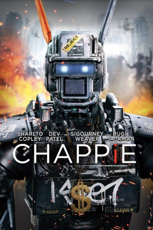

#1071 Chappie
 gesehen am 20.05.2015
gesehen am 20.05.2015
 
 IMDB-Wertung: 6.8 / 10
IMDB-Wertung: 6.8 / 10  Metascore: 41
Metascore: 41 
Jedes Kind, das auf die Welt kommt, ist voller Zuversicht. Und auf niemanden trifft das mehr zu als auf Chappie: Er ist talentiert, etwas ganz Besonderes und schlicht ein Wunderkind. Wie jedes Kind, gerät er unter den Einfluss seiner Umwelt - einiges davon ist gut, anderes schlecht. Er wird sich letztlich darauf verlassen, was sein Herz und seine Seele ihm sagen, um seinen Platz in der Welt zu finden und der Mann zu werden, der er sein will. Doch es gibt eine Sache, die Chappie von allen anderen unterscheidet: Er ist ein Roboter. Der erste Roboter, der die Fähigkeit hat, eigenständig zu denken und zu fühlen. Das ist eine gefährliche Idee - und bald auch eine große Herausforderung für Chappie. Denn einige mächtige und destruktive Kräfte möchten sicher stellen, dass er der Letzte seiner Art ist.
Jahr: 2015
Dauer: 120 Minuten
FSK: 12
Land: USA Studio: Columbia PicturesTonspuren: DTS - ,
Untertitel: Deutsch, Englisch,
Auflösung: 1080p (1920x800) Größe: 10444 MB
Genre: Action, Krimi, Drama, Sci-Fi, Thriller
Regisseur: Neill Blomkamp
Drehbuch: Neill Blomkamp, Terri Tatchell
Soundtrack: Hans Zimmer
Darsteller:
 Sharlto Copley als Chappie
Sharlto Copley als Chappie Dev Patel als Deon Wilson
Dev Patel als Deon Wilson Jose Pablo Cantillo als Yankie, Amerika
Jose Pablo Cantillo als Yankie, Amerika Hugh Jackman als Vincent Moore
Hugh Jackman als Vincent Moore Sigourney Weaver als Michelle Bradley
Sigourney Weaver als Michelle Bradley Brandon Auret als Hippo
Brandon Auret als Hippo- Anderson Cooper als Anderson Cooper
 Jason Cope als Tetravaal Lead Mechanic
Jason Cope als Tetravaal Lead Mechanic Chris Shields als Journalist
Chris Shields als Journalist- Bill Marchant als Professor
 Robert Hobbs als Police Commissioner
Robert Hobbs als Police Commissioner- Eugene Khumbanyiwa als King
- Wandile Molebatsi als Armored Truck Guard
- Arran Henn als VSN News Desk Reporter
 Dan Hirst als Merc
Dan Hirst als Merc Paul Hampshire als Merc
Paul Hampshire als Merc Graeme Duffy als Tech , uncredited
Graeme Duffy als Tech , uncredited- Miranda Frigon als Psychologist , uncredited
- Janus Prinsloo als Police Officer , uncredited
 Sean Owen Roberts als Hacker , uncredited
Sean Owen Roberts als Hacker , uncredited- Ninja als Ninja
- Yo-Landi Visser als Yo-Landi
- Johnny Selema als Pitbull
- Maurice Carpede als Police Chief
- Kevin Otto als Interviewer
- Mark K. Xulu als Gang Member
- Sherldon Marema als Gang Member
- Shaheed Hajee als Gang Member
- James Hendricks als Gang Member
- Julian Brits als Gang Member
- David Davadoss als Mercedes Benz Driver
- Anneli Muller als BMW Driver
- Kendal Watt als Nissan Driver
- Chan Marti als Field Reporter
- Vuyelwa Booi als Field Reporter
- Mike Blomkamp als Police Officer
- Anthony Bishop als Police Officer
 Paul Dobson als Police Robot
Paul Dobson als Police Robot- Max Poolman als Hippo's Thug
- Alistair Prodgers als Tetravaal Mechanic
- Thami Ngubeni als VSN News Desk Reporter
- James Bitonti als Gun Store Owner
- Andea Volschenk als Tetravaal Office Assistant
- Hein De Vries als Special Forces Soldier
- Edwin Gagiano als Office Worker , uncredited
Datei: X:\2015(A-F)\Chappie (2015, FSK12, 1920x800).mkv seit 16.05.2015
Festplatte: HD 2015(A-Z)
 Es gibt insgesamt 143 Filme in der Gruppe '2015(A-F)'
Es gibt insgesamt 143 Filme in der Gruppe '2015(A-F)'